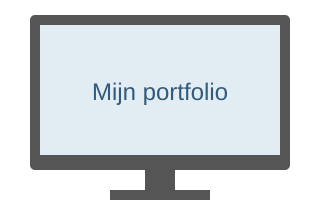

Welkom op mijn portfolio
Hoi, ik ben Thijmen Alvarez. Ik volg de opleiding Software Developer bij Techniek College Rotterdam. Daarnaast werk ik bij Informatique in Berkel en Rodenrijs.

Over deze website
Deze website is gemaakt voor mijn HTML- en CSS-opdracht. Je vindt hier informatie over mij, mijn opleiding, werkervaring en hobby’s.
Ik vind het leuk om met computers en elektronica bezig te zijn. Op school leer ik hoe ik zelf websites en programma’s kan maken.
Meer over mij